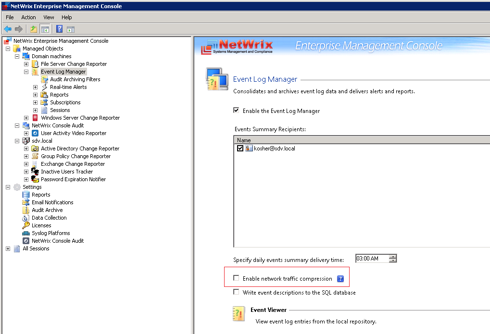
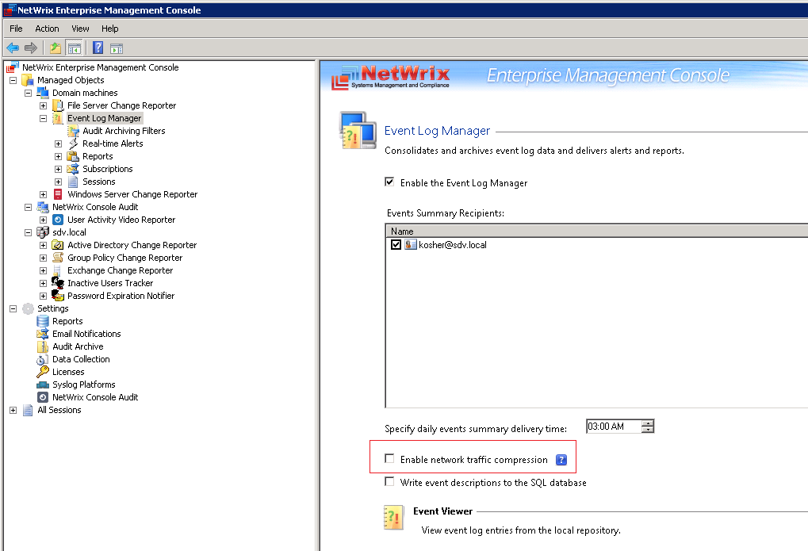

I get the following message in reports from Event Log Manager: Event collection completed
with errors. See the 'Error text' column for details.
The object invoked has disconnected from its clients. (Exception from HRESULT: 0x80010108 (RPC_E_DISCONNECTED))
The error message occurs when connection to the event log agent on the target machine was reset.
If the OS on the target machine is Windows 2003, please refer to the following KB article http://support.microsoft.com/kb/924432
If the OS on the target machine is Windows 2008 or later, please try to manually remove the Event Log agent from this server and Let the product reinstall it.
To remove the agent, please unregister the Event Log Collector service with help of the "sc delete" command and remove the entire C:WindowsNWAgentShare folder. The agent will be reinstalled during the next data collection. If these steps do not help, disable Network traffic compression for the corresponding managed object 
The object invoked has disconnected from its clients. (Exception from HRESULT: 0x80010108 (RPC_E_DISCONNECTED))
The error message occurs when connection to the event log agent on the target machine was reset.
If the OS on the target machine is Windows 2003, please refer to the following KB article http://support.microsoft.com/kb/924432
If the OS on the target machine is Windows 2008 or later, please try to manually remove the Event Log agent from this server and Let the product reinstall it.
To remove the agent, please unregister the Event Log Collector service with help of the "sc delete" command and remove the entire C:WindowsNWAgentShare folder. The agent will be reinstalled during the next data collection. If these steps do not help, disable Network traffic compression for the corresponding managed object 